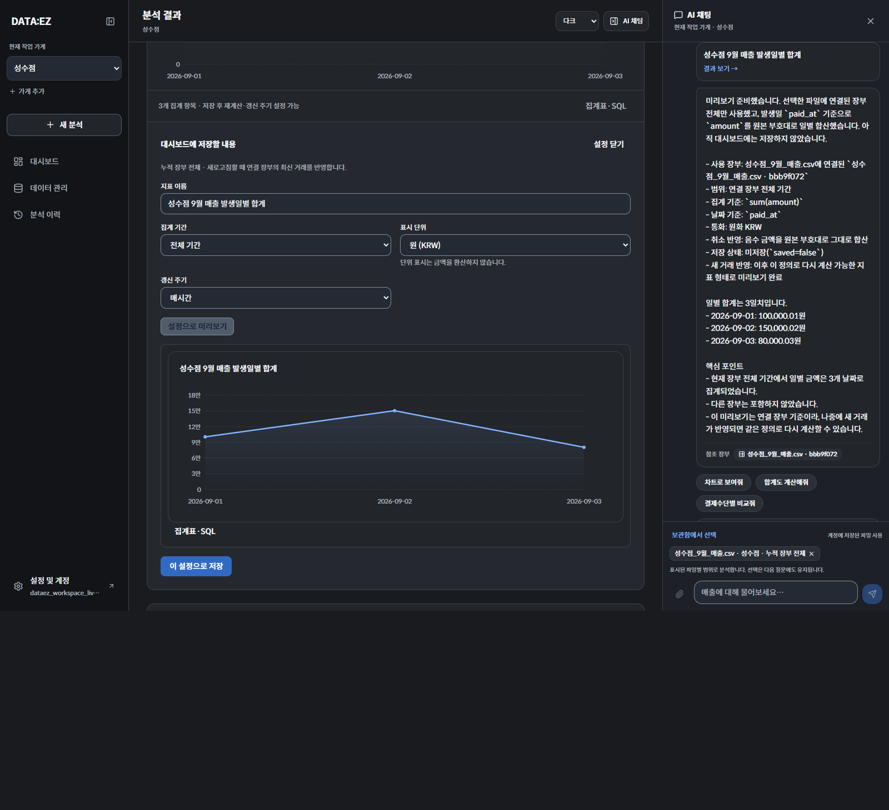

분석 범위 · 저장 설정 · 첫 사용 안내
실제 브라우저 → API → LLM → PostgreSQL. 합성 CSV로 자연어 질문 6개와 확인 항목 29개를 통과했습니다. 아래는 실제 연동 중 캡처한 화면입니다.
파일 원본 유지 330,000.06원거래 추가·수동 재계산 355,000.10원추가 거래·자동 갱신 360,000.15원

실제 브라우저 → API → LLM → PostgreSQL. 합성 CSV로 자연어 질문 6개와 확인 항목 29개를 통과했습니다. 아래는 실제 연동 중 캡처한 화면입니다.
